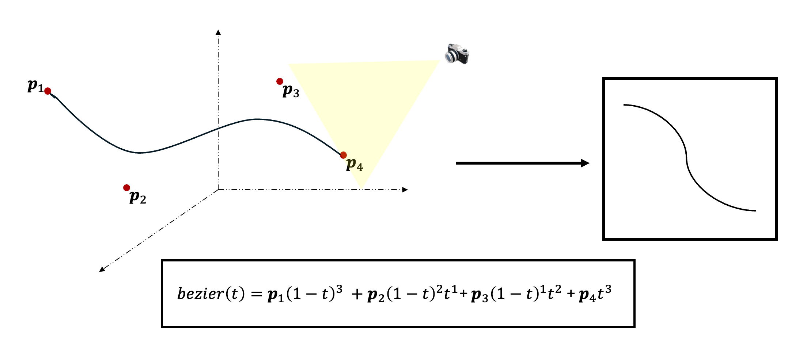

In this section, we present the methodology utilized for this paper. We first discuss the environment setup,
after which we detail how the predator and prey agents are created. Finally, we talk about how the agents are optimized.
We create a 3D environment using the Unity game development engine [3]. The selection of Unity as the engine
for creating the environment instead of a different simulator is motivated by several key factors. Mainly, Unity's ML-Agents
package [4] offers support for the OpenAI Gym framework
[5], which is widely used in
reinforcement learning research. This way, Unity enables interaction between the environment and the learning algorithms,
allowing for efficient experimentation and evaluation of predator-prey agents.
Moreover, the engine offers a wide range of built-in tools, such as physics simulations, ray tracing, and collision.
Finally, Unity provides a user-friendly and intuitive development environment, making it accessible to researchers with
varying levels of expertise.
To represent 3D sketches in a differentiable manner, we model 3D Bézier curves using spherical Gaussians (SGs) sampled along each curve’s path. This design allows efficient rasterization of the sketches into 2D images for training. Unlike CLIPasso’s discrete 2D rasterization, our approach supports backpropagation in 3D space and enables full differentiability with respect to the control points. Inspired by recent advances in Gaussian Splatting, we represent Bézier curves as sequences of Gaussians, each defined by a center and a fixed thickness, that can be projected onto 2D views using differentiable camera models.

3D Bézier curves are used for representing 3D sketches of objects.
Each spherical Gaussian is defined as:
where is the center of the Gaussian and is its radius (or thickness). To sample a Bézier curve of length with a desired overlap ratio , the sampling step and the number of samples are computed as:
For a Bézier curve with control points , the centers of the Gaussians sampled along the curve are given by:
where are the Bernstein basis coefficients. This makes each Gaussian center fully differentiable with respect to the Bézier control points.

Spherical Gaussians are utilized for differentiable rasterization of the 3D sketches.
After generating the Gaussians, we render them through a differentiable rasterizer that projects the 3D Gaussians into 2D using camera intrinsics and extrinsics. The resulting image is given by:
where and denote the intrinsic and extrinsic camera matrices, and define the image resolution. Each pixel can be written as:
This end-to-end differentiability allows training the sketch representation directly using image-level loss functions such as CLIP similarity. It was one of the key milestones proposed for the project.
To guide the optimization of the 3D Bézier sketch toward both geometrically accurate and semantically meaningful representations, we leverage a CLIP-based loss function. This loss encourages the rendered sketch views to match the real images not just pixel-wise but in high-level perceptual and semantic space. Following the strategy of CLIPasso, we define a dual-component objective that combines semantic similarity and geometric alignment, each captured from different layers of a pretrained CLIP model.
The final loss is a weighted sum of the semantic and geometric components:
Here, and are hyperparameters that balance the contribution of each term. The semantic loss is computed using the output of CLIP’s final fully connected layer, which captures the global alignment between rendered sketches and their corresponding RGB images in CLIP’s joint vision-language embedding space.
The geometric loss captures local spatial structure and can be extracted either from CLIP’s early convolutional layers or from token-wise attention maps, depending on the selected variant. This term ensures that the layout and fine-scale details of the projected sketches align with real-world object contours.
During training, the 3D sketch is projected into 2D using the differentiable rasterizer described in Section III-A. The resulting image is then passed through CLIP alongside its target RGB counterpart. The cosine distance between their embeddings drives the optimization, gradually refining the control points of the Bézier curves so that the rendered sketches become increasingly perceptually and semantically aligned with real views.
The training phase aims to optimize a set of 3D Bézier curves such that their 2D projections resemble real object images when viewed from different camera angles. This is achieved through an iterative loop involving projection, perceptual comparison, and gradient-based refinement. By leveraging CLIP embeddings as a supervisory signal, the model learns to align the rendered sketch views with the semantics of real RGB views. The training continues until convergence, producing a geometry-aware sketch representation that is both visually and semantically faithful.
Rasterization of images using camera matrix from the constructred 3D sketch.
In each training iteration, the current 3D Bézier sketch is projected into 2D using the known camera intrinsics and extrinsics. This rasterization step generates a view-dependent binary sketch image that mimics how the 3D curves would appear from that specific viewpoint.

Obtaining the CLIP Loss between the RGB images of the views and sampled sketch views.
The projected sketch view is then compared to the corresponding RGB image of the same view. Both are encoded using CLIP’s vision-language model, and a cosine similarity loss is computed to quantify their perceptual alignment in the embedding space.
Optimizing the control points using the backpropagated loss.
The CLIP loss is backpropagated through the differentiable projection and rendering pipeline to adjust the 3D control points of the Bézier curves. This step ensures that the curves evolve to better match the visual content of the reference images.
Training the model until loss converges.
This process is repeated iteratively for all views in the dataset. Over time, the loss steadily decreases as the curves converge to a semantically accurate and geometrically coherent representation of the object across all viewpoints.